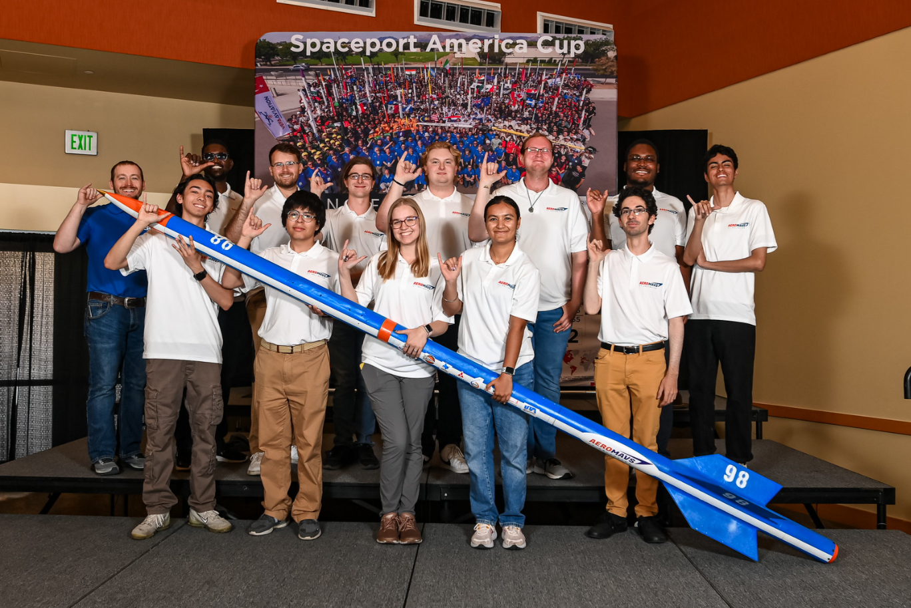

Rocketry Projects
Hands-on rocketry experience involving personal rocket development, student competition rocket work, manufacturing, testing, recovery systems, documentation, and team-based engineering.

AeroMavs team with our competition rocket.
Project Overview
My rocketry project experience includes both student-led aerospace work through AeroMavs and individual rocket development. These projects involved practical engineering work related to rocket design, manufacturing, testing, recovery systems, safety planning, documentation, and project coordination.
This work helped me connect classroom aerospace concepts to real hardware, team workflows, and the practical challenges that come with building and testing rocket systems. It also gave me experience working through design decisions, failure modes, test planning, and the importance of clear documentation in a hardware-focused engineering environment.
My Role
I supported rocketry work through leadership, coordination, documentation, and technical project support. This included helping organize project communication, supporting safety-related discussions, assisting with documentation, and contributing to the team environment needed for successful rocket development.
I also completed individual design work for a personal L1 certification rocket, including a modified drogue-chute nose-cone system intended to improve parachute deployment reliability. That individual work allowed me to take ownership of a specific mechanical design problem from failure identification through redesign, testing, and flight.
Technical Approach
Across my rocketry projects, the technical approach centered on turning design goals into hardware that could be built, tested, documented, and improved. This included considering how subsystems interact, how manufacturing choices affect reliability, and how testing can reveal problems that may not be obvious during the initial design phase.
The work required a practical balance between analysis, build constraints, safety considerations, and team execution. For student rocketry projects, success depends not only on designing individual components, but also on making sure the full rocket system is assembled, reviewed, tested, and documented in a way that supports safe and reliable operation.
Project Activities
- Supported rocket design, build, and integration work
- Contributed to manufacturing and assembly planning
- Participated in testing preparation and project readiness discussions
- Supported safety documentation and review processes
- Helped organize project communication and team coordination
Engineering Focus Areas
- Rocket structures, recovery systems, and subsystem integration
- Design iteration based on hardware limitations and testing needs
- Manufacturing constraints and practical build considerations
- Test readiness, risk awareness, and safety-focused decision-making
- Documentation of design choices, procedures, and results
Drogue-Nose-Cone Project
This individual project focused on improving recovery reliability for my L1 certification rocket. After an earlier parachute deployment failure, I redesigned the nose cone so that it could help pull the parachute out of the body tube after ejection. The design uses four deployable airbrakes that open outward, increasing drag and helping the recovery system deploy more consistently.
I modeled the redesigned nose cone and airbrake components in SolidWorks, adjusted the shoulder geometry, added pivot slots, reinforced the mechanism with steel rods, and tested the design before flight. The final system successfully deployed during the test flight and contributed to my L1 certification through the Tripoli Rocketry Association.

Demonstration GIF showing the drogue-nose-cone airbrakes opening after the nose cone leaves the rocket body tube.
Skills Used and Developed
Technical Skills
- Rocketry fundamentals
- SolidWorks design
- 3D printing design considerations
- Mechanical redesign and iteration
- Hardware integration
- Testing and troubleshooting
Professional Skills
- Technical documentation
- Failure analysis
- Problem-solving under constraints
- Design review communication
- Safety-focused decision-making
- Project ownership
Selected Contributions
These rocketry projects show my ability to support team-based aerospace hardware work while also taking ownership of individual design problems. Through both AeroMavs projects and my personal rocket work, I gained experience with design iteration, testing, documentation, and translating engineering ideas into physical systems.
Individual Rocket Work
- Identified a parachute deployment reliability issue
- Created a modified nose-cone design to improve recovery performance
- Used design iteration to strengthen weak points
- Documented the design, testing, and flight result
Team Rocketry Support
- Supported team planning for rocket development activities
- Contributed to technical and safety documentation
- Helped coordinate communication between project members
- Participated in discussions related to testing and project readiness
What I Learned
These rocketry projects helped me understand that aerospace engineering is not only about analysis, but also about execution. Hardware projects require careful planning, clear documentation, safety awareness, and strong communication between team members.
My individual rocket work also taught me how valuable it is to design around failure modes. After experiencing a parachute deployment issue, I redesigned the mechanism, strengthened weak points, tested the system, and verified that the final design worked in flight.
Future Improvements
In future rocketry work, I would like to expand my technical contributions in areas such as flight simulation, avionics, recovery systems, thrust vector control, and test data analysis. For personal rocket projects, I would also like to improve how I collect test data, compare design alternatives, and document performance more quantitatively.